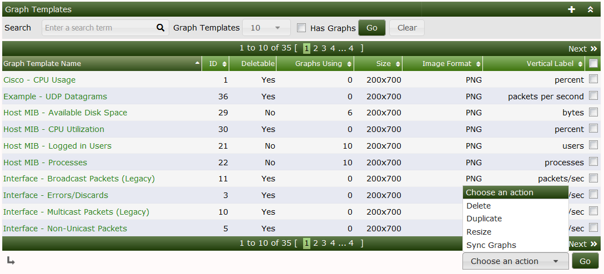
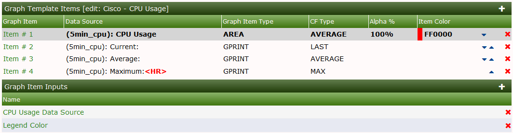
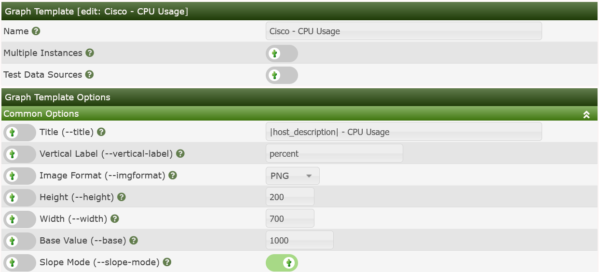
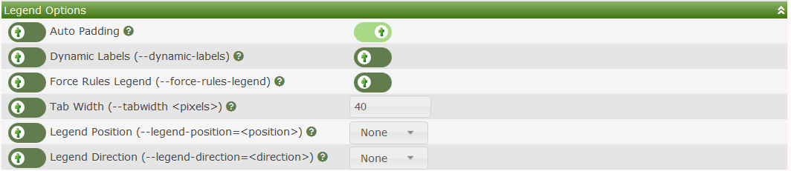

Graph Templates are Cacti objects that allows you to define how RRDtool is to render a Cacti Graph. Most RRDtool options are supported including CDEF's and VDEF's, Left and Right Axis, Ticks and Dashes, multiple Auto Scaling, Grid, and Legend Options.
The purpose of Graph Templates is to simplify the Automation process by pre-defining the layout of Graphs for various metrics that are to be monitored in Cacti. When used in Conjunction with Cacti's Graph Rules, you can automatically create just about any Data Query based Graph during Cacti's Network Discovery process.
The Graph Templates main screen looks like the image below:

From this page, you can see the title of each Graph Template, it's ID which is important for the Cacti CLI scripts. You can see if the Graph Template can be removed, and the number of Graphs using the Graph Template as well as the Size of the Graphs that will be created, the Image Format, and Vertical Label. Templates that are used by Devices can not be removed and therefore if you attempt to remove one of these Templates, you will receive and error message.
From the drop down there are three options, they are:
| Option | Description |
|---|---|
| Delete | Remove the Graph Template if it's Deletable |
| Duplicate | Make an exact copy of the Graph Template |
| Resize | Make a resize decision that affects both the Graph Template and any |
| Graphs created using this Graph Template | |
| Sync Graphs | Update all Graphs using this Graph Template with the |
| latest definition, adding new Graph Items and removing orphaned Graph Items |
When Editing a Graph Template, there will be several sections that will require information from the Administrator. Those sections include:
| Section | Description |
|---|---|
| Graph Template Items | These items paint inside the canvas of the Graph |
| Graph Item Inputs | This list is created automatically when you add Data Sources |
| to a Graph Template. However, you can also override certain Data Template | |
| and Graph Template fields by adding specifically named objects to this | |
| section as well. | |
| Graph Template | Allows you to name the Graph Template, and whether or not |
| you will allow multiple instances of this Graph Template to be used for a | |
| Device, and whether or not to test for valid data before allowing the creation | |
| of Graphs. The Test Data Source option is useful when you want to leverage | |
| complex Device Template that contains Graph Templates that may not be applicable | |
| for all classes of Devices using the Graph Template. | |
| Common Options | Things like Title, Vertical Label, Image Format, |
| Height and Width, Base Value and Slope Mode | |
| Scaling Options | Which determine if the Graph is auto-scaled |
| and by what means. Determines if the Graph will have fixed upper and lower limits | |
| Grid Options | Defines how the Graph canvas grid is rendered |
| Axis Options | Defines if there should be a right Axis and how it should be formatted |
| Legend Options | Defines how the Legends should be formatted |
Each of these sections are displayed below for reference. For more information on how to use these options, please visit the RRDtool Website.
The Graph Items make up what is draw within the canvas of the Graph. There are several Graph Item types including:
| Type | Description |
|---|---|
| AREA | Place an Area Fill on the canvas |
| AREA:STACK | The second item of an Area Fill to be stacked upon the first |
| COMMENT | A written comment. Can include: |host_|, |query_|, |
| |input_*| Replacement Variables | |
| GPRINT | Print a numeric value from the RRDfile with an optional CDEF or VDEF |
| and formatted using a GPRINT Preset. | |
| GPRINT:AVERAGE | Print a numeric value from the RRDfile from the AVERAGE |
| Consolidation Function within the RRA, modified by an optional CDEF, or VDEF, | |
| and formatted using a GPRINT Preset. | |
| GPRINT:LAST | Print a numeric value from the RRDfile from the LAST *Consolidation |
| Function*within the RRA, modified by an optional CDEF, or VDEF, | |
| and formatted using a GPRINT Preset. | |
| GPRINT:MAX | Print a numeric value from the RRDfile from the MAX *Consolidation |
| Function* within the RRA, modified by an optional CDEF, or VDEF, and formatted | |
| using a GPRINT Preset. | |
| GPRINT:MIN | Print a numeric value from the RRDfile from the MIN *Consolidation |
| Function* within the RRA, modified by an optional CDEF, or VDEF, | |
| and formatted using a GPRINT Preset. | |
| HRULE | Draw an Horizontal Rule at the given point on the canvas. |
| You can NOT use any Data Source element or an optional CDEF or VDEF, | |
| but may be able to use either a |query_|, or |input_| | |
| Replacement Variable. | |
| LEGEND | Draw a Legend from three GPRINTS using the same GPRINT Preset, |
| and VDEF or CDEF. The Current, Average, and Max Consolidation Functions | |
| are used.LEGEND_CAMM | Draw a Legend from four GPRINTS using the same GPRINT_Preset, |
| and VDEF or CDEF. The Current, Average, "Min*, and "Max" | |
| functions are used for this Legend. | |
| LINE[1,2,3] | Draw a 1, 2, 3 or used defined thickness pixel Line from the |
| RRDfile onto the canvas, modified by an optional CDEF, or VDEF. | |
| LINE:STACK | Stack a Line of a user defined thickness on top of another Line, |
| modified by an optional CDEF, or VDEF. | |
| TEXTALIGN | Modify future text using the alignment provided. |
| VRULE | Place a Vertical Rule on the canvas of a specific color and time position. |
The canvas is painted from the first Graph Item till the last with each successive Graph Item rendered on top of the previous. Please keep this in mind when creating a Graph Template.

Name - This is the name that you provide to the Graph Template.Since Cacti does not presently have the concept of Graph Template Class many authors will prefix the Name with a Class prefix like Net-SNMP for example.
Multiple Instances - This setting tells Cacti that a device can have more than one instance of the Template. This will allow you to select the Graph Template from the Create option of New Graphs interface more than once.
Test Data Sources - This option will test that the Data Source returns good data before allowing the creation of the Graph. You should be aware that if your Data Source calls a script that runs for a long time, selecting this option can really slow the Graph creation process. However, it's quite useful if you have a hybrid Device Template that includes a myriad of Graph Templates that may not work with all Devices that you create using the Device Template.
Under the Common Options, for each Graph Template you will specify patterns for the Graph Name, assign it's Vertical Label, specify the Width and Height, and Image Format for the resulting Graph. The Base Value is important as some units of measure can be for example: MB (for Mega Bytes - 1024) and MiB (for Mega integer Bytes - 1000). Lastly, the Slope Mode gives the resulting Graphs a smoother look.

The Scaling Options allow the Administrator to apply either Rigid or Auto Scaling settings to the resulting Graph. These options are fairly self explanatory. However, you can always view the RRDtool Documentation online for more information.
The Grid Options are rarely necessary unless you have specific requirements to render the resulting Graphs with some exotic unit.

The Axis Options allow you to define a Right Axis and optional Formatters.

The Legend options allow you to specify how the Legend should be placed on the resulting Graph modern RRDtool has several options that were not available in Cacti prior to Cacti 1.0.

Copyright (c) 2004-2024 The Cacti Group